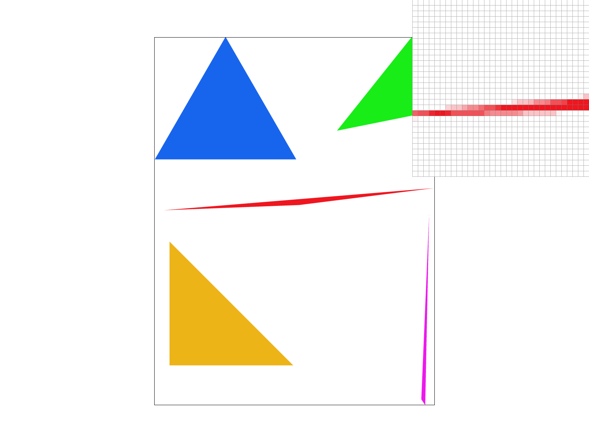
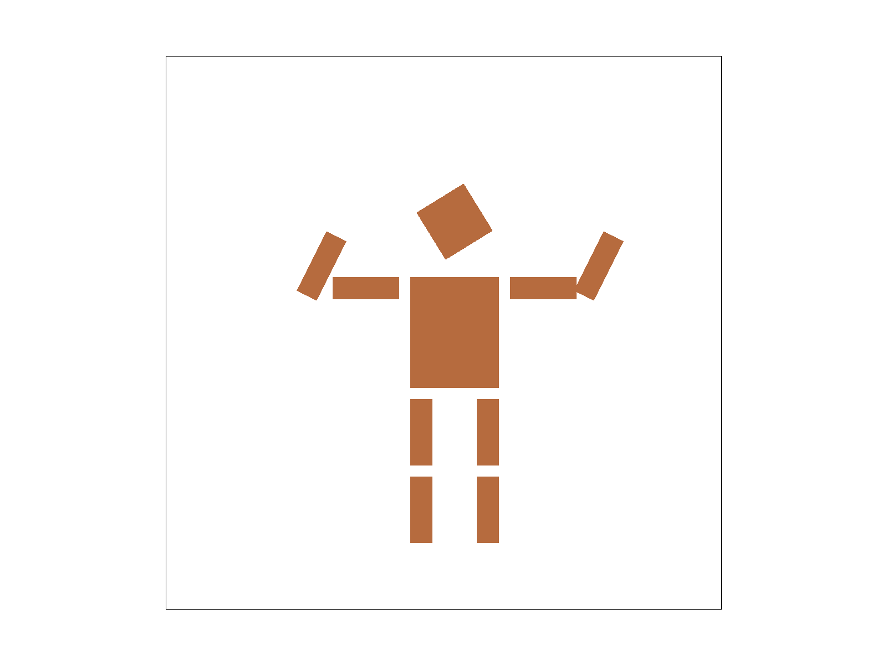
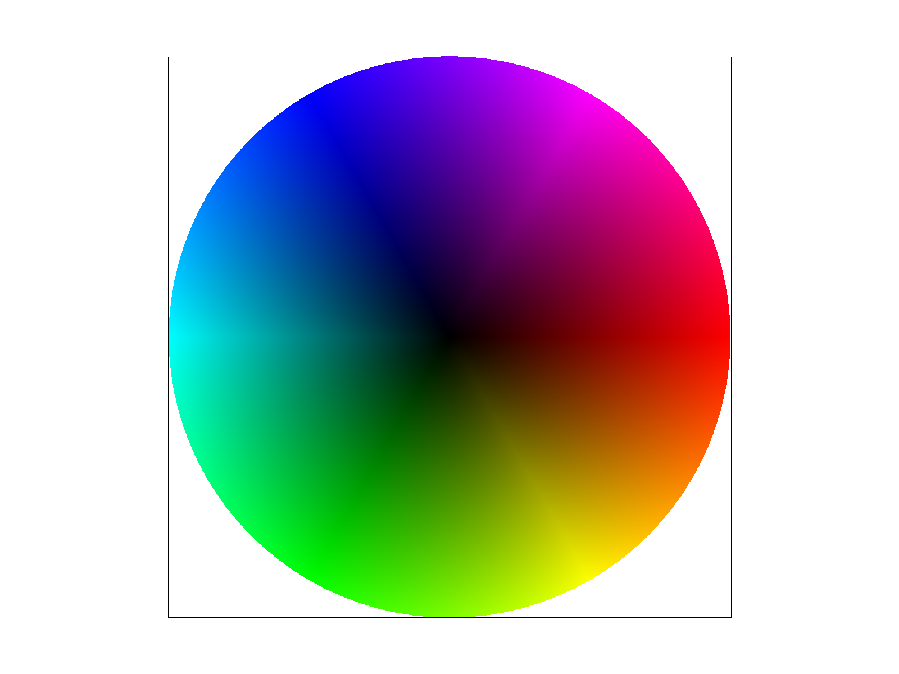
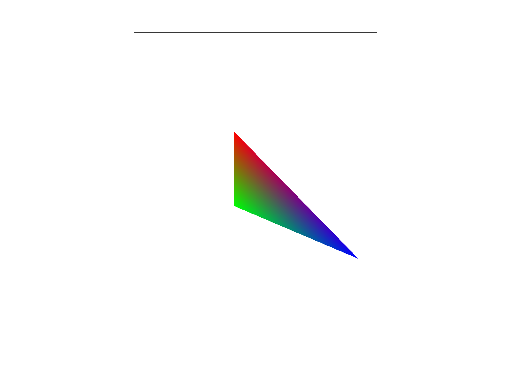

CS184/284A Spring 2025 Homework 1 Write-Up
Link to webpage: (TODO) cs184.eecs.berkeley.edu/sp25
Link to GitHub repository: (TODO) https://github.com/cal-cs184-student/hw1-rasterizer-pedroochoa#

Overview
Give a high-level overview of what you implemented in this homework. Think about what you've built as a whole. Share your thoughts on what interesting things you've learned from completing the homework.Task 1: Drawing Single-Color Triangles(20pts)
Rasterizing Triangles Walkthrough
We are given vertices that are already in screen space. If they were given in local coordinate space we would have to convert them into screen space. With these screen space coordinates of the vertices we now have to turn on the pixels where the samples are within the triangle. We can have multiple samples but for this problem we only had one which is in the middle of the pixel. If the sample, the center of the pixel, lies within the triangle we turn it on with the associating color. We test if the sample is inside the triangle using the Point-in-Triangle Test. To get over the problem of the winding order of the vertices I found that a point is in the triangle as long as the sign of the result of three line tests are all the same. In this problem any samples on the edge of the triangle are also considered inside the triangle, which means that a result of 0 from the line test would also count as inside the triangle.
Optimizations & why my algorithm is better
My algorithm finds the minimum boundary box for the triangle, and starts in the top left of the box. It then travels down the box while going left to right. My algorithm is as good as testing each sample in the entire boundary box because for every row of pixels I stop testing samples once I stop filling in pixels. In other words once I reach the end of the portion of the triangle for that row I stop and move to the next row of the boundary box because I know that there will be no more filling for the rest of that row.
Extra Credit:
I run the Point-in-Triangle Test with each sample within the boundary box from left to right as I increment on the y axis. An optimization I made was to stop testing samples after I reach the end of the triangle on that row. I then move to the beginning of the next row, within the boundary box, and repeat the previous step.

|
Task 2: Antialiasing by Supersampling(20pts)
My Algorithm
My algorithm is very similar to Task 1. I first create the boundary box around the triangle. I then traverse through all the pixels from left to right and row by row. For each pixel I then iterate through each sample. For each sample I test if that sample is within the triangle. This process consists of 4 nested loops. If the sample is inside the triangle then we mark that sample as the passed in color. I store all this information in the provided sample_buffer. The way sample_buffer is organized is that every sample_rate*i index is a new pixel where i is an integer between 0 and width*height. I accessed the pixel index by using (y * width + x) * sample_rate. I then accessed samples by adding the appropriate offset. Once my sample_buffer is populated I grab the n samples from each pixel and calculate the average color.
Why is supersampling useful?
By averaging the color from the samples in a single pixel we achieve a smooth transition between colors and reduce aliasing artifacts. This is evident in the images where under a single sample we see jagged lines, and stair step pixels. As we increase the sample the sides become much more smoother. This is also helpful because we get smoother transitions without much more work.
What modifications did you make to the rasterization pipeline in the process?
I modified rasterized_triangle() as described in the My Algorithm section. I also set_sample_rate() and set_framebuffer_target() by updating the resizing line to take into account that sample_rate will change. I also modified resolve_to_framebuffer() to take average out the color from all the samples. I did this by separating the rgb from each sample, and taking the average of each one. I then created this new average to its own color, and set it to the pixel in the framebuffer.
Explain how you used supersampling to antialias your triangles.
I used supersampling to antialias my triangles by adding more samples to each pixel. Each sample captured the color of that region within the triangle. Then using the variety of color from the samples I was able to find an average color which would be used to fill that pixel. The number of samples per pixel were decided by sample_rate which its square root gave us the grid of evenly spaced samples. This approach gave us smooth transitions between colors, edges, and reduced jagged edges in the final image.
|
|
|
|

|
Task 3: Transforms(10pts)
What I made
I made my robot dance. I did this by rotating his arms so they are in the air. I also made his torso slimmer so it can look more proportional.
What I learned
From this task I gained a stronger understanding of the hierarchy structure that we covered in class. I was also suprised to learn that all the shapes were made of triangles. I expected it to see every type of shape that would then be later broken down into a triangle in the pipeline. Fortunatley, and shape can be decomposed into triangles. I did find it confusing that the preview of the robot in Visual Studios was different than the image produced when terminal commands are ran. I will have to look deeper into this issue.
|

|
Task 4: Barycentric coordinates(10pts)
Explain Barycentric Coordinates in Your Own Words
Barycentric coordinates is an interpolation method. The way it works is that each vertex is associated with a color. For example, below the right image has red, blue and green as the color for each respective vertex. As we can see in Barycentric Coordinates we create a smooth transition between the three colors within the triangle. Wherever the sample lands in the triangle is the color it will take for that pixel, assuming we are using a single sample per pixel. A more technical explanation of Barycentric Coordinates is that wherever the sample lands we take a ratio of the area to each vertex and the total area of the triangle. We will then use this ratio to weight the average of the three vertex colors.
|

|

|
Task 5: "Pixel sampling" for texture mapping(15pts)
What is pixel sampling in my own words and how I implemented it to perform texture mapping
...
Comment on the relative differences. Discuss when there will be a large difference between the two methods and why
...